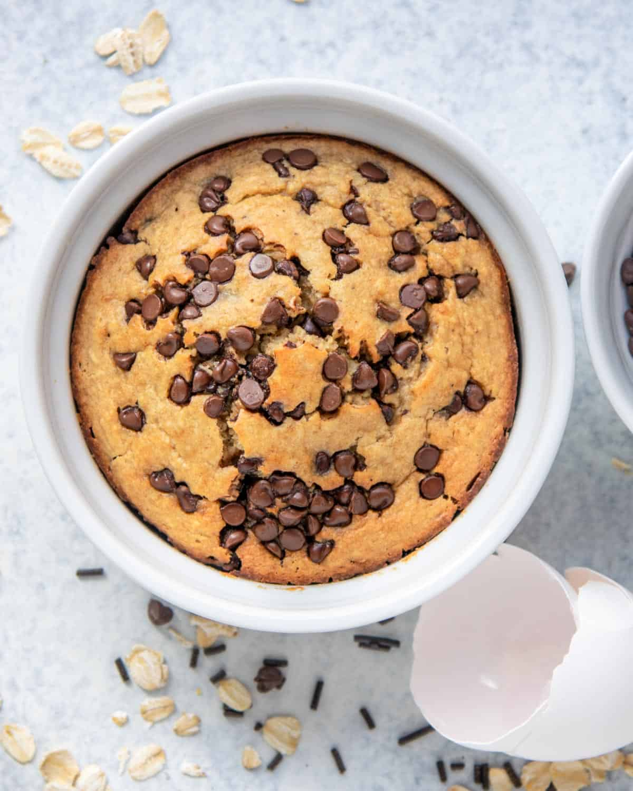

White Chocolate Baked Oats

Description
Feel like having cake for breakfast? Make this Chocolate Chip Baked Oats instead! It tastes just like cake and super easy to make. With 30 minutes of bake time, you will be having dessert for breakfast!
Ingredients
- 40g Rolled Oats
- 1 tsp Baking Powder
- 1 Egg
- 60 ml Milk
- 1/2 Banana
- 1 Pinch Salt
- A few drops of Vanilla
- 2 tbsp White Chocolate Chips
Steps
- Preheat the oven to 200 C
- Place all ingredients into the blender. Except for the chocolate chips.
- Blend for one minute until all ingredients are well blended.
- Pour the batter equally into a greased ramekin. Add half a tablespoon of chocolate chips into the batter and mix it in. Top with the other half tablespoon of chocolate chips.
- Bake for 25-30 minutes until a toothpick comes out clean
- Let it cool and serve!